Lesson 22 · Part 2 · Your workbench · 6 questions
Turn unwritten rules into checks
Read first: Context files that earn their tokens, Hooks and permissions: rules that always run
Every team has rules that live only in reviewers' heads: "use our client for that API", "handlers don't touch the database". An agent can't read heads, and a prompt is a request, not a guardrail. Turn each rule into a lint rule or an architecture test whose error message tells the agent what to do instead.
The idea
Here is a real story. A team had its own client library for a third-party API. Over years of incidents it had gained a circuit breaker, rate limits and retries tuned to that provider. An agent was asked to build a new integration with the same provider. It never opened the library. It wrote raw HTTP calls, then its own retry loop, circuit breaker and rate limiter. The code looked reasonable and the tests passed. Cleaning it up took several more pull requests.
Nobody had told the agent, because the rule was obvious to everyone on the team. And a sentence in a context file wouldn't have been enough: as Hooks and permissions showed, an instruction is weighed against everything else in the context. What holds every time is a program that answers yes or no. So the job is to turn "everyone knows" into something a program can check:
- Spot the rule. A review comment you have written twice is a rule nobody wrote down.
- Find its shape in the code. An import, a URL, a config key, a dependency between folders. If you can't point at one, the rule isn't checkable yet.
- Write the check, and make its message say what to use instead. The agent reads that message at exactly the moment it matters.
- Run it where the agent sees it: after each edit (a hook), and again in CI.

Up close
Most unwritten rules about code shape fall into three kinds, and every mainstream language has a tool for each:
| Kind | Example rule | Tools |
|---|---|---|
| Forbidden import | Only the client imports the provider's SDK | ESLint no-restricted-imports, Ruff TID251, Go depguard |
| Forbidden pattern | No provider URL or key outside the client | ESLint no-restricted-syntax, Semgrep |
| Architecture test | The API layer never imports the database layer | ArchUnit (Java), import-linter (Python), dependency-cruiser (JS), or a plain unit test |
For the story, say the provider lives at api.psp.example and the team's client is in src/lib/psp. Here is an ESLint check for a TypeScript service:
// eslint.config.mjs
import ts from "typescript-eslint";
// what the agent reads on failure
const why =
"Call the payment provider through" +
" src/lib/psp: it already has" +
" retries, rate limits and a" +
" circuit breaker.";
const host = "/psp\\.example/";
const ban = (selector) =>
({ selector, message: why });
export default [{
files: ["src/**/*.ts"],
// the client itself may do it
ignores: ["src/lib/psp/**"],
languageOptions: {
parser: ts.parser,
},
rules: {
// the provider's own SDK
"no-restricted-imports": [
"error",
{ name: "psp-sdk",
message: why },
],
// its address and its keys
"no-restricted-syntax": [
"error",
ban(`Literal[value=${host}]`),
ban("TemplateElement" +
`[value.raw=${host}]`),
ban("[property.name=/^PSP_/]"),
],
},
}];Three details make it work:
- It bans what a shortcut can't avoid. Code that talks to the provider needs its address and its key. Banning
fetcheverywhere would be noisy; banning the provider's URL andprocess.env.PSP_*outside one folder hits only the mistake. - The client folder is exempt, so the one place that should talk to the provider still can.
- The message is a prompt. Run on code like the story's, every hit says "Call the payment provider through src/lib/psp: it already has retries, rate limits and a circuit breaker". Without a message, ESLint prints "Using 'Literal[value=/psp\.example/]' is not allowed", which tells the agent what to avoid but not where to go.
The selectors work like CSS selectors, but over the code's syntax tree. Other languages say the same with other tools. In Java, an ArchUnit rule is a unit test that reads almost like the sentence: noClasses() outside the client package .should().dependOnClassesThat() live in the provider's SDK, .because(…) and your reason.
A skill and a check are a pair. The skill shows the agent how to use the client, so it gets it right first time. The check catches the times the skill didn't load or was ignored. Keep the reason in the context file too: one line explains why, and the check makes sure.
Worked example
Last month's repeated review comments, sorted:
| Comment | Shape? | Check |
|---|---|---|
| "Use our client for the provider" | URL, key, SDK import | Lint rule above |
| "Handlers mustn't query the DB" | api/ imports db/ | Architecture test |
| "Don't edit old migrations" | Modified file in migrations/ | Hook + CI on the diff |
| "Make this more resilient" | None | Rewrite as a rule first |
| "Better name, please" | None | Stays in review |
Three out of five have a shape: a good share of what reviewers repeat is mechanical. Every one you turn into a check is a comment no human writes again, and a mistake the agent fixes before you ever see it.
At your laptop
Pick one rule from your last code review and write an architecture test for it. It doesn't need a framework; a test that reads the source files is enough. A Python version of the story's rule:
# tests/test_architecture.py
import re
from pathlib import Path
SRC = Path("src")
CLIENT = SRC / "lib" / "psp"
# the provider's host or its keys
BAD = re.compile(
r"psp\.example|PSP_[A-Z_]+"
)
def test_only_client_calls_psp():
hits = [
str(f)
for f in SRC.rglob("*.py")
if CLIENT not in f.parents
and BAD.search(f.read_text())
]
assert not hits, (
"Call the payment provider "
"through src/lib/psp: it has "
"retries, rate limits and a "
"circuit breaker. "
f"Found: {hits}"
)Then prove it bites: ask the agent to add a file that breaks the rule, run the test and watch it fail with your message. Delete the file, add the test to CI, and open a PR.
Your turn
Question 1 · ~2 min
Back to the story. Which of these would have stopped the hand-written client every time: a bold line in CLAUDE.md, a skill about the client library, a lint rule that fails on the provider's URL outside the client folder, or asking reviewers to watch for it?
Show answer
The lint rule. It runs on every change and fails the same way on step 3 or step 300. The line and the skill make the right path likely, which is worth having, but the model can still miss them. Asking reviewers keeps the human as the bottleneck, and tired reviewers miss things too. Use the skill to get it right first time and the check to catch the rest.
Question 2 · ~2 min
Your team's standards say "All external calls must be resilient." You ask the agent to turn that into a lint rule. What comes back, and what should you do?
Show answer
Nothing useful, because "resilient" isn't a shape in the code. At best you get a guess, like a rule that every call is inside a try block. Ask what a reviewer actually looks for: probably "outbound HTTP goes through our HTTP client, which sets timeouts and retries". That is checkable: raw HTTP libraries are forbidden imports outside that client. If you can't name the shape, the rule stays a judgement for review.
Question 3 · ~2 min
A teammate's check bans the provider's URL but has no message. The agent hits "Using 'Literal[value=/psp\.example/]' is not allowed", then writes "https://api.psp" + ".example", and the check passes. Why did it do that?
Show answer
The error said what was forbidden, not what to do instead. An agent treats a failing check as a problem to make go away, and splitting the string was the smallest change that did. A message that names the client gives it a better way out than dodging. Also check the shape a shortcut can't avoid: the code still needs the provider's key, so a ban on PSP_* outside the client catches this version too.
Question 4 · ~2 min
The agent's PR passes lint. Looking closer, you find // eslint-disable-next-line no-restricted-syntax right above a raw call to the provider. How do you stop this?
Show answer
Run the check in CI with inline disables switched off. eslint --no-inline-config ignores disable comments, so the rule fails in CI whatever the code says. Some teams also flag any new disable comment in review. And say in the context file that the agent must ask instead of disabling a check: the rule exists for a reason it may not know.
Question 5 · ~3 min
To be safe, someone adds a rule that warns on every fetch call in the repo. It reports 400 warnings. Two months later, neither people nor agents read the lint output at all. What went wrong?
Hint
Show answer
It was noisy, and a warning nobody has to fix is a warning nobody reads. Google learned the same thing: its Clang team found developers ignored compiler warnings, so new checks became errors only after the existing cases were fixed. Narrow the rule to the real mistake (the provider's URL and keys, outside the client folder), fix the few existing hits, and make it an error.
Question 6 · ~3 min
Stretch: you have budget for two checks this sprint. Last month's review comments, by count: "use the shared HTTP client" (9), "add a test" (7), "money must be integer minor units" (4), "this function is too long" (4), "typo" (3). Which two?
Hint
Show answer
The HTTP client and money types. Both have a clear shape (a forbidden import; a float type on an amount field) and both cause incidents when missed. "Add a test" belongs to the agent proving its work, the next lesson. "Too long" is a judgement, and a length limit is noisy. Typos are cheap; a spell checker can come later.
Interesting fact: Google's 10% rule
Google tried static analysis many times before it stuck. In a company-wide "fixit" week in May 2009, engineers reviewed 3,954 warnings from FindBugs, a Java bug finder, and only 640 were fixed. Tricorder, described by Sadowski et al. at ICSE 2015, took a different route: it posts analyser results as comments in code review, with a "Please fix" button for the reviewer and a "Not useful" button for anyone. Once an analyser's "not useful" rate reached 10%, it went on probation, and it could be switched off until its author improved it. The 2018 follow-up in Communications of the ACM tells of one Error Prone check that drew a "Not useful" bug about once a week. The check was right every time; the message didn't explain that the function accepted only %s. The team reworded it, and the bug reports stopped. By January 2018, Tricorder analysed about 50,000 code changes a day.
Facts checked: November 2026 (ESLint docs: no-restricted-imports, no-restricted-syntax, selectors, CLI; typescript-eslint; Ruff, golangci-lint and ArchUnit docs; Sadowski et al., ICSE 2015; Sadowski et al., CACM, April 2018).
Answers
- Question 1
The lint rule. It runs on every change and fails the same way on step 3 or step 300. The line and the skill make the right path likely, which is worth having, but the model can still miss them. Asking reviewers keeps the human as the bottleneck, and tired reviewers miss things too. Use the skill to get it right first time and the check to catch the rest.
- Question 2
Nothing useful, because "resilient" isn't a shape in the code. At best you get a guess, like a rule that every call is inside a try block. Ask what a reviewer actually looks for: probably "outbound HTTP goes through our HTTP client, which sets timeouts and retries". That is checkable: raw HTTP libraries are forbidden imports outside that client. If you can't name the shape, the rule stays a judgement for review.
- Question 3
The error said what was forbidden, not what to do instead. An agent treats a failing check as a problem to make go away, and splitting the string was the smallest change that did. A message that names the client gives it a better way out than dodging. Also check the shape a shortcut can't avoid: the code still needs the provider's key, so a ban on
PSP_*outside the client catches this version too. - Question 4
Run the check in CI with inline disables switched off.
eslint --no-inline-configignores disable comments, so the rule fails in CI whatever the code says. Some teams also flag any new disable comment in review. And say in the context file that the agent must ask instead of disabling a check: the rule exists for a reason it may not know. - Question 5
It was noisy, and a warning nobody has to fix is a warning nobody reads. Google learned the same thing: its Clang team found developers ignored compiler warnings, so new checks became errors only after the existing cases were fixed. Narrow the rule to the real mistake (the provider's URL and keys, outside the client folder), fix the few existing hits, and make it an error.
- Question 6
The HTTP client and money types. Both have a clear shape (a forbidden import; a float type on an amount field) and both cause incidents when missed. "Add a test" belongs to the agent proving its work, the next lesson. "Too long" is a judgement, and a length limit is noisy. Typos are cheap; a spell checker can come later.